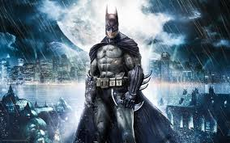

Батман (на английски: Batman) е измислен персонаж и супергерой на ДиСи Комикс, появил се за
пръв път в Detective Comics бр. 27 през месец май 1939 г. Оттогава той става един от най-известните
супергерои в света.[1] Батман е съвместно създаден от художника Боб Кейн и писателя Бил Фингър, но само
Кейн получава официалното признание за персонажа.
Батман е тайната самоличност на Брус Уейн - милиардер и алтруист, понякога преструващ се на
типичния богат плейбой, за да избегне подозрения относно истинските си цели. Като дете става свидетел на
убийството на родителите си, което го травмира дълбоко и го кара да се тренира до върха на физическото и
интелектуалното съвършенство, за да се бори с престъпността. За разлика от повечето супергерои, той няма
никакви свръхестествени сили и способности. Батман разчита на коварния си интелект, завидни детективски
умения, всевъзможни високотехнологични приспособления, страховито майсторство в бойните изкуства и най-вече
силата на изненадата, паниката и страха, за да се бори с престъпността.